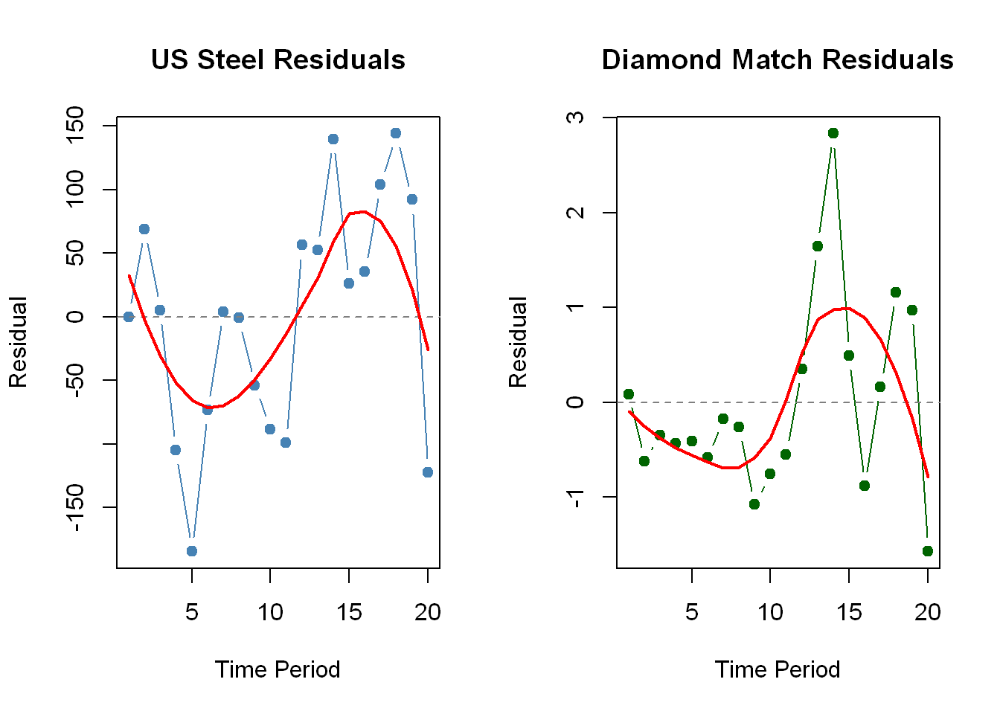
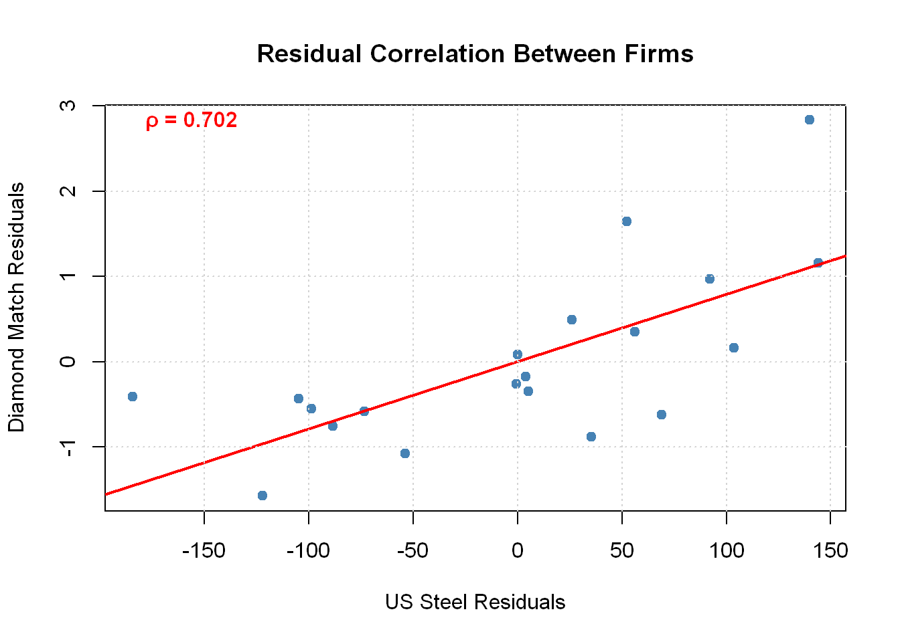

# Clear workspace (use with caution!)
rm(list = ls())
# Set plotting options
options(
repr.plot.width = 8,
repr.plot.height = 6,
repr.plot.res = 150,
warn = -1
)
# Required packages for SUR analysis
packages <- c(
"plm", # Panel Linear Models
"systemfit", # System of equations estimation
"modelsummary", # Beautiful regression tables
"ggplot2", # Enhanced graphics
"knitr" # Table formatting
)
# Install packages if needed, then load them
invisible(lapply(packages, function(pkg) {
if (!require(pkg, character.only = TRUE, quietly = TRUE)) {
install.packages(pkg)
require(pkg, character.only = TRUE, quietly = TRUE)
}
}))Seemingly Unrelated Regression (SUR)
Theory, Intuition, and Application to the Grunfeld Dataset
What This Notebook Covers
This notebook explores Seemingly Unrelated Regression (SUR), a technique for estimating multiple regression equations simultaneously when their error terms are correlated. We’ll walk through the motivation for SUR, show when and why it’s useful, and demonstrate how to implement it in R using the classic Grunfeld investment dataset.
Along the way, we’ll cover how to test for cross-sectional dependence, compare the efficiency gains of SUR versus standard OLS, and interpret the results in the context of investment decisions by firms facing common macroeconomic shocks.
1 Introduction: What is SUR?
Seemingly Unrelated Regression (SUR) is a generalization of linear regression that allows us to estimate a system of equations simultaneously. The equations appear “unrelated” because they involve different dependent variables, but they become “related” through contemporaneously correlated error terms.
1.1 Key Intuition
Imagine you’re modeling investment decisions for two firms. Even though each firm makes independent investment decisions, both might be affected by the same macroeconomic shocks (e.g., interest rate changes, oil price shocks, or policy changes). These common shocks create correlation between the error terms in the two regression equations.
Why does this matter? If we estimate each equation separately using OLS, we ignore this correlation and lose efficiency. SUR estimation accounts for this correlation structure, producing more efficient estimators with lower standard errors.
1.2 When to Use SUR
SUR is particularly useful when:
- You have multiple related equations with different dependent variables
- The equations share similar regressors but have different coefficients
- You suspect contemporaneous correlation in the disturbances
- You want more efficient estimates than equation-by-equation OLS
Mathematical Setup: For \(M\) equations observed over \(T\) time periods:
\[ \begin{aligned} y_{1t} &= X_{1t}\beta_1 + \epsilon_{1t} \\ y_{2t} &= X_{2t}\beta_2 + \epsilon_{2t} \\ &\vdots \\ y_{Mt} &= X_{Mt}\beta_M + \epsilon_{Mt} \end{aligned} \]
The key assumption is: \(E[\epsilon_{it}\epsilon_{jt}] = \sigma_{ij} \neq 0\) (contemporaneous correlation)
2 The Grunfeld Investment Dataset
We’ll use the famous Grunfeld dataset to illustrate SUR estimation. This dataset was popularized by Arnold Zellner in his seminal 1962 paper on seemingly unrelated regressions. Grunfeld originally collected the data for his 1958 PhD thesis at the University of Chicago on the determinants of corporate investment.
2.1 The Investment Model
The Grunfeld model relates a firm’s gross investment to its market value and capital stock:
\[ \text{inv}_{it} = \beta_{0i} + \beta_{1i} \text{val}_{it} + \beta_{2i} \text{cap}_{it} + \epsilon_{it} \]
where:
- \(\text{inv}_{it}\) = gross investment for firm \(i\) at time \(t\)
- \(\text{val}_{it}\) = market value of firm \(i\) at time \(t\)
- \(\text{cap}_{it}\) = capital stock of firm \(i\) at time \(t\)
Our subset focuses on two firms:
- US: United States Steel Corporation
- DM: Diamond Match Company
Both observed annually from 1935 to 1954 (20 years).
2.2 Why These Two Firms?
While these firms operated in different industries (steel vs. consumer goods), they both faced similar macroeconomic conditions during the pre-war, wartime, and post-war periods. This makes them ideal candidates for SUR estimation.
Additional Resources:
3 Setup and Data Loading
3.1 Load Required Packages
3.2 Load and Inspect the Data
# Load data from online source
my.raw.data <- read.csv(
url("https://wwwedu.github.io/NYU_1102/Lecture01/grun_data.csv")
)
# Display the data
knitr::kable(
my.raw.data,
format = "pipe",
digits = 2,
caption = "Table 1: Grunfeld Investment Data (US Steel and Diamond Match, 1935-1954)"
)| firm | year | inv | val | cap |
|---|---|---|---|---|
| US | 1935 | 209.90 | 1362.40 | 53.80 |
| US | 1936 | 355.30 | 1807.10 | 50.50 |
| US | 1937 | 469.90 | 2676.30 | 118.10 |
| US | 1938 | 262.30 | 1801.90 | 260.20 |
| US | 1939 | 230.40 | 1957.30 | 312.70 |
| US | 1940 | 361.60 | 2202.90 | 254.20 |
| US | 1941 | 472.80 | 2380.50 | 261.40 |
| US | 1942 | 445.60 | 2168.60 | 298.70 |
| US | 1943 | 361.60 | 1985.10 | 301.80 |
| US | 1944 | 288.20 | 1813.90 | 279.10 |
| US | 1945 | 258.70 | 1850.20 | 213.80 |
| US | 1946 | 420.30 | 2067.70 | 132.60 |
| US | 1947 | 420.50 | 1796.70 | 264.80 |
| US | 1948 | 494.50 | 1625.80 | 306.90 |
| US | 1949 | 405.10 | 1667.00 | 351.10 |
| US | 1950 | 418.80 | 1677.40 | 357.80 |
| US | 1951 | 588.20 | 2289.50 | 342.10 |
| US | 1952 | 645.50 | 2159.40 | 444.20 |
| US | 1953 | 641.00 | 2031.30 | 623.60 |
| US | 1954 | 459.30 | 2115.50 | 669.70 |
| DM | 1935 | 2.54 | 70.91 | 4.50 |
| DM | 1936 | 2.00 | 87.94 | 4.71 |
| DM | 1937 | 2.19 | 82.20 | 4.57 |
| DM | 1938 | 1.99 | 58.72 | 4.56 |
| DM | 1939 | 2.03 | 80.54 | 4.38 |
| DM | 1940 | 1.81 | 86.47 | 4.21 |
| DM | 1941 | 2.14 | 77.68 | 4.12 |
| DM | 1942 | 1.86 | 62.16 | 3.83 |
| DM | 1943 | 0.93 | 62.24 | 3.58 |
| DM | 1944 | 1.18 | 61.82 | 3.41 |
| DM | 1945 | 1.36 | 65.85 | 3.31 |
| DM | 1946 | 2.24 | 69.54 | 3.23 |
| DM | 1947 | 3.81 | 64.97 | 3.90 |
| DM | 1948 | 5.66 | 68.00 | 5.38 |
| DM | 1949 | 4.21 | 71.24 | 7.39 |
| DM | 1950 | 3.42 | 69.05 | 8.74 |
| DM | 1951 | 4.67 | 83.04 | 9.07 |
| DM | 1952 | 6.00 | 74.42 | 9.93 |
| DM | 1953 | 6.53 | 63.51 | 11.68 |
| DM | 1954 | 5.12 | 58.12 | 14.33 |
# Summary statistics
summary(my.raw.data) firm year inv val
Length:40 Min. :1935 Min. : 0.930 Min. : 58.12
Class :character 1st Qu.:1940 1st Qu.: 2.228 1st Qu.: 69.42
Mode :character Median :1944 Median :108.215 Median : 725.17
Mean :1944 Mean :206.780 Mean :1021.37
3rd Qu.:1949 3rd Qu.:419.175 3rd Qu.:1964.25
Max. :1954 Max. :645.500 Max. :2676.30
cap
Min. : 3.230
1st Qu.: 4.545
Median : 32.415
Mean :150.398
3rd Qu.:284.000
Max. :669.700 4 Equation-by-Equation OLS Estimation
As a baseline, let’s estimate each firm’s investment equation separately using ordinary least squares (OLS). This ignores any potential correlation between the firms’ disturbances.
4.1 Split Data by Firm
# Subset data for each firm
US.data <- subset(my.raw.data, firm == "US")
DM.data <- subset(my.raw.data, firm == "DM")
cat("US Steel observations:", nrow(US.data), "\n")US Steel observations: 20 cat("Diamond Match observations:", nrow(DM.data), "\n")Diamond Match observations: 20 4.2 Estimate US Steel Investment
lm.US <- lm(inv ~ val + cap, data = US.data)
summary(lm.US)
Call:
lm(formula = inv ~ val + cap, data = US.data)
Residuals:
Min 1Q Median 3Q Max
-184.488 -77.210 4.508 59.421 144.035
Coefficients:
Estimate Std. Error t value Pr(>|t|)
(Intercept) -49.1983 148.0754 -0.332 0.7438
val 0.1749 0.0742 2.357 0.0307 *
cap 0.3896 0.1424 2.737 0.0140 *
---
Signif. codes: 0 '***' 0.001 '**' 0.01 '*' 0.05 '.' 0.1 ' ' 1
Residual standard error: 96.43 on 17 degrees of freedom
Multiple R-squared: 0.4709, Adjusted R-squared: 0.4086
F-statistic: 7.564 on 2 and 17 DF, p-value: 0.00447Interpretation (US Steel):
- Value coefficient: For every unit increase in market value, investment increases by 0.175
- Capital coefficient: The negative coefficient on capital stock suggests firms with larger existing capital stock invest less (replacement vs. expansion trade-off)
- R²: The model explains 47.1% of investment variation
4.3 Estimate Diamond Match Investment
lm.DM <- lm(inv ~ val + cap, data = DM.data)
summary(lm.DM)
Call:
lm(formula = inv ~ val + cap, data = DM.data)
Residuals:
Min 1Q Median 3Q Max
-1.5748 -0.5972 -0.3036 0.3834 2.8344
Coefficients:
Estimate Std. Error t value Pr(>|t|)
(Intercept) 0.161519 2.065564 0.078 0.939
val 0.004573 0.027161 0.168 0.868
cap 0.437369 0.079589 5.495 3.94e-05 ***
---
Signif. codes: 0 '***' 0.001 '**' 0.01 '*' 0.05 '.' 0.1 ' ' 1
Residual standard error: 1.085 on 17 degrees of freedom
Multiple R-squared: 0.6432, Adjusted R-squared: 0.6012
F-statistic: 15.32 on 2 and 17 DF, p-value: 0.0001571# Optional: Show just the OLS models side-by-side using modelsummary
modelsummary(
list("US Steel (OLS)" = lm.US,
"Diamond Match (OLS)" = lm.DM),
stars = TRUE,
gof_map = c("nobs", "r.squared", "adj.r.squared", "rmse")
)| US Steel (OLS) | Diamond Match (OLS) | |
|---|---|---|
| + p < 0.1, * p < 0.05, ** p < 0.01, *** p < 0.001 | ||
| (Intercept) | -49.198 | 0.162 |
| (148.075) | (2.066) | |
| val | 0.175* | 0.005 |
| (0.074) | (0.027) | |
| cap | 0.390* | 0.437*** |
| (0.142) | (0.080) | |
| Num.Obs. | 20 | 20 |
| R2 | 0.471 | 0.643 |
| R2 Adj. | 0.409 | 0.601 |
| RMSE | 88.91 | 1.00 |
Interpretation (Diamond Match):
- The coefficients are quite different from US Steel, suggesting heterogeneous investment behavior
- The R² is lower, indicating more unexplained variation in Diamond Match’s investment decisions
5 The Case for SUR: Examining Residual Correlation
5.1 Visual Inspection of Residuals
The key motivation for SUR is the presence of contemporaneously correlated disturbances. Let’s visualize the residuals from our separate OLS regressions:
par(mfrow = c(1, 2))
# US Steel residuals
r_US <- lm.US$residuals
n <- 1:length(r_US)
plot(n, r_US,
type = "b",
pch = 19,
col = "steelblue",
main = "US Steel Residuals",
xlab = "Time Period",
ylab = "Residual")
abline(h = 0, lty = 2, col = "gray50")
lines(predict(loess(r_US ~ n)), col = "red", lwd = 2)
# Diamond Match residuals
r_DM <- lm.DM$residuals
plot(n, r_DM,
type = "b",
pch = 19,
col = "darkgreen",
main = "Diamond Match Residuals",
xlab = "Time Period",
ylab = "Residual")
abline(h = 0, lty = 2, col = "gray50")
lines(predict(loess(r_DM ~ n)), col = "red", lwd = 2)
What do we observe?
The residual patterns show similar movements over time (note the red smoothing lines). Both firms’ residuals are:
- High in the early periods (pre-WWII)
- Dip during the war years
- Rise again in the post-war period
This suggests common macroeconomic shocks affecting both firms simultaneously.
5.2 Scatter Plot of Residuals
plot(lm.US$residuals, lm.DM$residuals,
pch = 19,
col = "steelblue",
xlab = "US Steel Residuals",
ylab = "Diamond Match Residuals",
main = "Residual Correlation Between Firms")
abline(lm(lm.DM$residuals ~ lm.US$residuals), col = "red", lwd = 2)
grid()
# Add correlation
corr <- cor(lm.US$residuals, lm.DM$residuals)
text(x = min(lm.US$residuals),
y = max(lm.DM$residuals),
labels = paste0("ρ = ", round(corr, 3)),
pos = 4,
col = "red",
font = 2)
A positive correlation confirms our suspicion of contemporaneous dependence!
6 Panel Data Configuration
Before using advanced panel estimation methods, we need to configure our data as a panel object, specifying the cross-sectional (firm) and time (year) dimensions.
# Configure as panel data
my.data <- pdata.frame(my.raw.data, index = c("firm", "year"))
# Check the structure
str(my.data)Classes 'pdata.frame' and 'data.frame': 40 obs. of 5 variables:
$ firm: Factor w/ 2 levels "DM","US": 1 1 1 1 1 1 1 1 1 1 ...
..- attr(*, "names")= chr [1:40] "DM-1935" "DM-1936" "DM-1937" "DM-1938" ...
..- attr(*, "index")=Classes 'pindex' and 'data.frame': 40 obs. of 2 variables:
.. ..$ firm: Factor w/ 2 levels "DM","US": 1 1 1 1 1 1 1 1 1 1 ...
.. ..$ year: Factor w/ 20 levels "1935","1936",..: 1 2 3 4 5 6 7 8 9 10 ...
$ year: Factor w/ 20 levels "1935","1936",..: 1 2 3 4 5 6 7 8 9 10 ...
..- attr(*, "names")= chr [1:40] "DM-1935" "DM-1936" "DM-1937" "DM-1938" ...
..- attr(*, "index")=Classes 'pindex' and 'data.frame': 40 obs. of 2 variables:
.. ..$ firm: Factor w/ 2 levels "DM","US": 1 1 1 1 1 1 1 1 1 1 ...
.. ..$ year: Factor w/ 20 levels "1935","1936",..: 1 2 3 4 5 6 7 8 9 10 ...
$ inv : 'pseries' Named num 2.54 2 2.19 1.99 2.03 1.81 2.14 1.86 0.93 1.18 ...
..- attr(*, "names")= chr [1:40] "DM-1935" "DM-1936" "DM-1937" "DM-1938" ...
..- attr(*, "index")=Classes 'pindex' and 'data.frame': 40 obs. of 2 variables:
.. ..$ firm: Factor w/ 2 levels "DM","US": 1 1 1 1 1 1 1 1 1 1 ...
.. ..$ year: Factor w/ 20 levels "1935","1936",..: 1 2 3 4 5 6 7 8 9 10 ...
$ val : 'pseries' Named num 70.9 87.9 82.2 58.7 80.5 ...
..- attr(*, "names")= chr [1:40] "DM-1935" "DM-1936" "DM-1937" "DM-1938" ...
..- attr(*, "index")=Classes 'pindex' and 'data.frame': 40 obs. of 2 variables:
.. ..$ firm: Factor w/ 2 levels "DM","US": 1 1 1 1 1 1 1 1 1 1 ...
.. ..$ year: Factor w/ 20 levels "1935","1936",..: 1 2 3 4 5 6 7 8 9 10 ...
$ cap : 'pseries' Named num 4.5 4.71 4.57 4.56 4.38 4.21 4.12 3.83 3.58 3.41 ...
..- attr(*, "names")= chr [1:40] "DM-1935" "DM-1936" "DM-1937" "DM-1938" ...
..- attr(*, "index")=Classes 'pindex' and 'data.frame': 40 obs. of 2 variables:
.. ..$ firm: Factor w/ 2 levels "DM","US": 1 1 1 1 1 1 1 1 1 1 ...
.. ..$ year: Factor w/ 20 levels "1935","1936",..: 1 2 3 4 5 6 7 8 9 10 ...
- attr(*, "index")=Classes 'pindex' and 'data.frame': 40 obs. of 2 variables:
..$ firm: Factor w/ 2 levels "DM","US": 1 1 1 1 1 1 1 1 1 1 ...
..$ year: Factor w/ 20 levels "1935","1936",..: 1 2 3 4 5 6 7 8 9 10 ...7 Alternative Methods for Equation-by-Equation Estimation
7.1 Using PLM Package
The pvcm() function (Panel Variable Coefficients Model) estimates separate equations for each panel unit:
myOLS.pvcm <- pvcm(inv ~ val + cap,
data = my.data,
model = "within")
print(coef(myOLS.pvcm)) (Intercept) val cap
DM 0.1615186 0.004573432 0.4373692
US -49.1983219 0.174856015 0.3896419Note: The pvcm() object doesn’t easily provide standard errors for individual coefficients. For full coefficient information including standard errors, use systemfit() (shown below) or the individual lm() models we estimated earlier.
7.2 Using SYSTEMFIT Package
The systemfit() function with method = "OLS" gives the same results:
myOLS.sysfit <- systemfit(inv ~ val + cap,
method = "OLS",
data = my.data)
# Display coefficients in a formatted table
knitr::kable(
summary(myOLS.sysfit)$coefficients,
digits = 4,
caption = "OLS Estimates by Equation"
)| Estimate | Std. Error | t value | Pr(>|t|) | |
|---|---|---|---|---|
| DM_(Intercept) | 0.1615 | 2.0656 | 0.0782 | 0.9386 |
| DM_val | 0.0046 | 0.0272 | 0.1684 | 0.8683 |
| DM_cap | 0.4374 | 0.0796 | 5.4954 | 0.0000 |
| US_(Intercept) | -49.1983 | 148.0754 | -0.3323 | 0.7438 |
| US_val | 0.1749 | 0.0742 | 2.3566 | 0.0307 |
| US_cap | 0.3896 | 0.1424 | 2.7369 | 0.0140 |
7.3 Manual Calculation: Understanding the Math
To understand what’s happening under the hood, let’s calculate the OLS coefficients manually. This reveals the block-diagonal structure of the SUR design matrix:
# Construct design matrix for US Steel (top block)
X1 <- cbind(1, US.data$val, US.data$cap, 0, 0, 0)
# Construct design matrix for Diamond Match (bottom block)
X2 <- cbind(0, 0, 0, 1, DM.data$val, DM.data$cap)
# Stack the blocks
X <- rbind(X1, X2)
# Stack the dependent variables
y <- my.raw.data$inv
# OLS formula: β = (X'X)^(-1) X'y
betas.ols <- solve(t(X) %*% X) %*% t(X) %*% y
cat("Manually calculated OLS coefficients:\n")Manually calculated OLS coefficients:print(betas.ols) [,1]
[1,] -49.198321862
[2,] 0.174856015
[3,] 0.389641889
[4,] 0.161518567
[5,] 0.004573432
[6,] 0.437369190The Structure: Note how the design matrix has a block-diagonal structure where:
- First 3 columns (and rows 1-20) relate to US Steel
- Last 3 columns (and rows 21-40) relate to Diamond Match
- Zeros ensure each firm’s coefficients are estimated independently
8 Testing for Cross-Sectional Dependence
Before applying SUR, we should formally test whether cross-sectional dependence exists.
8.1 Examining the Covariance Matrix
# Residual covariance matrix
cat("Residual Covariance Matrix (Σ):\n")Residual Covariance Matrix (Σ):print(summary(myOLS.sysfit)$residCov) DM US
DM 1.178043 73.45838
US 73.458384 9299.60405cat("\nResidual Correlation Matrix:\n")
Residual Correlation Matrix:print(summary(myOLS.sysfit)$residCor) DM US
DM 1.0000000 0.7018245
US 0.7018245 1.0000000The covariance (73.46) and correlation (0.702) between residuals are both positive and substantial.
8.2 Kronecker Product and Full Error Covariance
For SUR, we assume the full error covariance matrix \(\Omega\) has a Kronecker product structure:
\[\Omega = \Sigma \otimes I_T\]
where \(\Sigma\) is the \(M \times M\) contemporaneous covariance matrix and \(I_T\) is a \(T \times T\) identity matrix.
N <- nrow(DM.data)
sigma_hat <- summary(myOLS.sysfit)$residCov
omega_hat <- sigma_hat %x% diag(N) # Kronecker product
knitr::kable(
omega_hat,
format = "pipe",
digits = 1,
caption = "Table 2: Estimated Error Covariance Matrix"
)| 1.2 | 0.0 | 0.0 | 0.0 | 0.0 | 0.0 | 0.0 | 0.0 | 0.0 | 0.0 | 0.0 | 0.0 | 0.0 | 0.0 | 0.0 | 0.0 | 0.0 | 0.0 | 0.0 | 0.0 | 73.5 | 0.0 | 0.0 | 0.0 | 0.0 | 0.0 | 0.0 | 0.0 | 0.0 | 0.0 | 0.0 | 0.0 | 0.0 | 0.0 | 0.0 | 0.0 | 0.0 | 0.0 | 0.0 | 0.0 |
| 0.0 | 1.2 | 0.0 | 0.0 | 0.0 | 0.0 | 0.0 | 0.0 | 0.0 | 0.0 | 0.0 | 0.0 | 0.0 | 0.0 | 0.0 | 0.0 | 0.0 | 0.0 | 0.0 | 0.0 | 0.0 | 73.5 | 0.0 | 0.0 | 0.0 | 0.0 | 0.0 | 0.0 | 0.0 | 0.0 | 0.0 | 0.0 | 0.0 | 0.0 | 0.0 | 0.0 | 0.0 | 0.0 | 0.0 | 0.0 |
| 0.0 | 0.0 | 1.2 | 0.0 | 0.0 | 0.0 | 0.0 | 0.0 | 0.0 | 0.0 | 0.0 | 0.0 | 0.0 | 0.0 | 0.0 | 0.0 | 0.0 | 0.0 | 0.0 | 0.0 | 0.0 | 0.0 | 73.5 | 0.0 | 0.0 | 0.0 | 0.0 | 0.0 | 0.0 | 0.0 | 0.0 | 0.0 | 0.0 | 0.0 | 0.0 | 0.0 | 0.0 | 0.0 | 0.0 | 0.0 |
| 0.0 | 0.0 | 0.0 | 1.2 | 0.0 | 0.0 | 0.0 | 0.0 | 0.0 | 0.0 | 0.0 | 0.0 | 0.0 | 0.0 | 0.0 | 0.0 | 0.0 | 0.0 | 0.0 | 0.0 | 0.0 | 0.0 | 0.0 | 73.5 | 0.0 | 0.0 | 0.0 | 0.0 | 0.0 | 0.0 | 0.0 | 0.0 | 0.0 | 0.0 | 0.0 | 0.0 | 0.0 | 0.0 | 0.0 | 0.0 |
| 0.0 | 0.0 | 0.0 | 0.0 | 1.2 | 0.0 | 0.0 | 0.0 | 0.0 | 0.0 | 0.0 | 0.0 | 0.0 | 0.0 | 0.0 | 0.0 | 0.0 | 0.0 | 0.0 | 0.0 | 0.0 | 0.0 | 0.0 | 0.0 | 73.5 | 0.0 | 0.0 | 0.0 | 0.0 | 0.0 | 0.0 | 0.0 | 0.0 | 0.0 | 0.0 | 0.0 | 0.0 | 0.0 | 0.0 | 0.0 |
| 0.0 | 0.0 | 0.0 | 0.0 | 0.0 | 1.2 | 0.0 | 0.0 | 0.0 | 0.0 | 0.0 | 0.0 | 0.0 | 0.0 | 0.0 | 0.0 | 0.0 | 0.0 | 0.0 | 0.0 | 0.0 | 0.0 | 0.0 | 0.0 | 0.0 | 73.5 | 0.0 | 0.0 | 0.0 | 0.0 | 0.0 | 0.0 | 0.0 | 0.0 | 0.0 | 0.0 | 0.0 | 0.0 | 0.0 | 0.0 |
| 0.0 | 0.0 | 0.0 | 0.0 | 0.0 | 0.0 | 1.2 | 0.0 | 0.0 | 0.0 | 0.0 | 0.0 | 0.0 | 0.0 | 0.0 | 0.0 | 0.0 | 0.0 | 0.0 | 0.0 | 0.0 | 0.0 | 0.0 | 0.0 | 0.0 | 0.0 | 73.5 | 0.0 | 0.0 | 0.0 | 0.0 | 0.0 | 0.0 | 0.0 | 0.0 | 0.0 | 0.0 | 0.0 | 0.0 | 0.0 |
| 0.0 | 0.0 | 0.0 | 0.0 | 0.0 | 0.0 | 0.0 | 1.2 | 0.0 | 0.0 | 0.0 | 0.0 | 0.0 | 0.0 | 0.0 | 0.0 | 0.0 | 0.0 | 0.0 | 0.0 | 0.0 | 0.0 | 0.0 | 0.0 | 0.0 | 0.0 | 0.0 | 73.5 | 0.0 | 0.0 | 0.0 | 0.0 | 0.0 | 0.0 | 0.0 | 0.0 | 0.0 | 0.0 | 0.0 | 0.0 |
| 0.0 | 0.0 | 0.0 | 0.0 | 0.0 | 0.0 | 0.0 | 0.0 | 1.2 | 0.0 | 0.0 | 0.0 | 0.0 | 0.0 | 0.0 | 0.0 | 0.0 | 0.0 | 0.0 | 0.0 | 0.0 | 0.0 | 0.0 | 0.0 | 0.0 | 0.0 | 0.0 | 0.0 | 73.5 | 0.0 | 0.0 | 0.0 | 0.0 | 0.0 | 0.0 | 0.0 | 0.0 | 0.0 | 0.0 | 0.0 |
| 0.0 | 0.0 | 0.0 | 0.0 | 0.0 | 0.0 | 0.0 | 0.0 | 0.0 | 1.2 | 0.0 | 0.0 | 0.0 | 0.0 | 0.0 | 0.0 | 0.0 | 0.0 | 0.0 | 0.0 | 0.0 | 0.0 | 0.0 | 0.0 | 0.0 | 0.0 | 0.0 | 0.0 | 0.0 | 73.5 | 0.0 | 0.0 | 0.0 | 0.0 | 0.0 | 0.0 | 0.0 | 0.0 | 0.0 | 0.0 |
| 0.0 | 0.0 | 0.0 | 0.0 | 0.0 | 0.0 | 0.0 | 0.0 | 0.0 | 0.0 | 1.2 | 0.0 | 0.0 | 0.0 | 0.0 | 0.0 | 0.0 | 0.0 | 0.0 | 0.0 | 0.0 | 0.0 | 0.0 | 0.0 | 0.0 | 0.0 | 0.0 | 0.0 | 0.0 | 0.0 | 73.5 | 0.0 | 0.0 | 0.0 | 0.0 | 0.0 | 0.0 | 0.0 | 0.0 | 0.0 |
| 0.0 | 0.0 | 0.0 | 0.0 | 0.0 | 0.0 | 0.0 | 0.0 | 0.0 | 0.0 | 0.0 | 1.2 | 0.0 | 0.0 | 0.0 | 0.0 | 0.0 | 0.0 | 0.0 | 0.0 | 0.0 | 0.0 | 0.0 | 0.0 | 0.0 | 0.0 | 0.0 | 0.0 | 0.0 | 0.0 | 0.0 | 73.5 | 0.0 | 0.0 | 0.0 | 0.0 | 0.0 | 0.0 | 0.0 | 0.0 |
| 0.0 | 0.0 | 0.0 | 0.0 | 0.0 | 0.0 | 0.0 | 0.0 | 0.0 | 0.0 | 0.0 | 0.0 | 1.2 | 0.0 | 0.0 | 0.0 | 0.0 | 0.0 | 0.0 | 0.0 | 0.0 | 0.0 | 0.0 | 0.0 | 0.0 | 0.0 | 0.0 | 0.0 | 0.0 | 0.0 | 0.0 | 0.0 | 73.5 | 0.0 | 0.0 | 0.0 | 0.0 | 0.0 | 0.0 | 0.0 |
| 0.0 | 0.0 | 0.0 | 0.0 | 0.0 | 0.0 | 0.0 | 0.0 | 0.0 | 0.0 | 0.0 | 0.0 | 0.0 | 1.2 | 0.0 | 0.0 | 0.0 | 0.0 | 0.0 | 0.0 | 0.0 | 0.0 | 0.0 | 0.0 | 0.0 | 0.0 | 0.0 | 0.0 | 0.0 | 0.0 | 0.0 | 0.0 | 0.0 | 73.5 | 0.0 | 0.0 | 0.0 | 0.0 | 0.0 | 0.0 |
| 0.0 | 0.0 | 0.0 | 0.0 | 0.0 | 0.0 | 0.0 | 0.0 | 0.0 | 0.0 | 0.0 | 0.0 | 0.0 | 0.0 | 1.2 | 0.0 | 0.0 | 0.0 | 0.0 | 0.0 | 0.0 | 0.0 | 0.0 | 0.0 | 0.0 | 0.0 | 0.0 | 0.0 | 0.0 | 0.0 | 0.0 | 0.0 | 0.0 | 0.0 | 73.5 | 0.0 | 0.0 | 0.0 | 0.0 | 0.0 |
| 0.0 | 0.0 | 0.0 | 0.0 | 0.0 | 0.0 | 0.0 | 0.0 | 0.0 | 0.0 | 0.0 | 0.0 | 0.0 | 0.0 | 0.0 | 1.2 | 0.0 | 0.0 | 0.0 | 0.0 | 0.0 | 0.0 | 0.0 | 0.0 | 0.0 | 0.0 | 0.0 | 0.0 | 0.0 | 0.0 | 0.0 | 0.0 | 0.0 | 0.0 | 0.0 | 73.5 | 0.0 | 0.0 | 0.0 | 0.0 |
| 0.0 | 0.0 | 0.0 | 0.0 | 0.0 | 0.0 | 0.0 | 0.0 | 0.0 | 0.0 | 0.0 | 0.0 | 0.0 | 0.0 | 0.0 | 0.0 | 1.2 | 0.0 | 0.0 | 0.0 | 0.0 | 0.0 | 0.0 | 0.0 | 0.0 | 0.0 | 0.0 | 0.0 | 0.0 | 0.0 | 0.0 | 0.0 | 0.0 | 0.0 | 0.0 | 0.0 | 73.5 | 0.0 | 0.0 | 0.0 |
| 0.0 | 0.0 | 0.0 | 0.0 | 0.0 | 0.0 | 0.0 | 0.0 | 0.0 | 0.0 | 0.0 | 0.0 | 0.0 | 0.0 | 0.0 | 0.0 | 0.0 | 1.2 | 0.0 | 0.0 | 0.0 | 0.0 | 0.0 | 0.0 | 0.0 | 0.0 | 0.0 | 0.0 | 0.0 | 0.0 | 0.0 | 0.0 | 0.0 | 0.0 | 0.0 | 0.0 | 0.0 | 73.5 | 0.0 | 0.0 |
| 0.0 | 0.0 | 0.0 | 0.0 | 0.0 | 0.0 | 0.0 | 0.0 | 0.0 | 0.0 | 0.0 | 0.0 | 0.0 | 0.0 | 0.0 | 0.0 | 0.0 | 0.0 | 1.2 | 0.0 | 0.0 | 0.0 | 0.0 | 0.0 | 0.0 | 0.0 | 0.0 | 0.0 | 0.0 | 0.0 | 0.0 | 0.0 | 0.0 | 0.0 | 0.0 | 0.0 | 0.0 | 0.0 | 73.5 | 0.0 |
| 0.0 | 0.0 | 0.0 | 0.0 | 0.0 | 0.0 | 0.0 | 0.0 | 0.0 | 0.0 | 0.0 | 0.0 | 0.0 | 0.0 | 0.0 | 0.0 | 0.0 | 0.0 | 0.0 | 1.2 | 0.0 | 0.0 | 0.0 | 0.0 | 0.0 | 0.0 | 0.0 | 0.0 | 0.0 | 0.0 | 0.0 | 0.0 | 0.0 | 0.0 | 0.0 | 0.0 | 0.0 | 0.0 | 0.0 | 73.5 |
| 73.5 | 0.0 | 0.0 | 0.0 | 0.0 | 0.0 | 0.0 | 0.0 | 0.0 | 0.0 | 0.0 | 0.0 | 0.0 | 0.0 | 0.0 | 0.0 | 0.0 | 0.0 | 0.0 | 0.0 | 9299.6 | 0.0 | 0.0 | 0.0 | 0.0 | 0.0 | 0.0 | 0.0 | 0.0 | 0.0 | 0.0 | 0.0 | 0.0 | 0.0 | 0.0 | 0.0 | 0.0 | 0.0 | 0.0 | 0.0 |
| 0.0 | 73.5 | 0.0 | 0.0 | 0.0 | 0.0 | 0.0 | 0.0 | 0.0 | 0.0 | 0.0 | 0.0 | 0.0 | 0.0 | 0.0 | 0.0 | 0.0 | 0.0 | 0.0 | 0.0 | 0.0 | 9299.6 | 0.0 | 0.0 | 0.0 | 0.0 | 0.0 | 0.0 | 0.0 | 0.0 | 0.0 | 0.0 | 0.0 | 0.0 | 0.0 | 0.0 | 0.0 | 0.0 | 0.0 | 0.0 |
| 0.0 | 0.0 | 73.5 | 0.0 | 0.0 | 0.0 | 0.0 | 0.0 | 0.0 | 0.0 | 0.0 | 0.0 | 0.0 | 0.0 | 0.0 | 0.0 | 0.0 | 0.0 | 0.0 | 0.0 | 0.0 | 0.0 | 9299.6 | 0.0 | 0.0 | 0.0 | 0.0 | 0.0 | 0.0 | 0.0 | 0.0 | 0.0 | 0.0 | 0.0 | 0.0 | 0.0 | 0.0 | 0.0 | 0.0 | 0.0 |
| 0.0 | 0.0 | 0.0 | 73.5 | 0.0 | 0.0 | 0.0 | 0.0 | 0.0 | 0.0 | 0.0 | 0.0 | 0.0 | 0.0 | 0.0 | 0.0 | 0.0 | 0.0 | 0.0 | 0.0 | 0.0 | 0.0 | 0.0 | 9299.6 | 0.0 | 0.0 | 0.0 | 0.0 | 0.0 | 0.0 | 0.0 | 0.0 | 0.0 | 0.0 | 0.0 | 0.0 | 0.0 | 0.0 | 0.0 | 0.0 |
| 0.0 | 0.0 | 0.0 | 0.0 | 73.5 | 0.0 | 0.0 | 0.0 | 0.0 | 0.0 | 0.0 | 0.0 | 0.0 | 0.0 | 0.0 | 0.0 | 0.0 | 0.0 | 0.0 | 0.0 | 0.0 | 0.0 | 0.0 | 0.0 | 9299.6 | 0.0 | 0.0 | 0.0 | 0.0 | 0.0 | 0.0 | 0.0 | 0.0 | 0.0 | 0.0 | 0.0 | 0.0 | 0.0 | 0.0 | 0.0 |
| 0.0 | 0.0 | 0.0 | 0.0 | 0.0 | 73.5 | 0.0 | 0.0 | 0.0 | 0.0 | 0.0 | 0.0 | 0.0 | 0.0 | 0.0 | 0.0 | 0.0 | 0.0 | 0.0 | 0.0 | 0.0 | 0.0 | 0.0 | 0.0 | 0.0 | 9299.6 | 0.0 | 0.0 | 0.0 | 0.0 | 0.0 | 0.0 | 0.0 | 0.0 | 0.0 | 0.0 | 0.0 | 0.0 | 0.0 | 0.0 |
| 0.0 | 0.0 | 0.0 | 0.0 | 0.0 | 0.0 | 73.5 | 0.0 | 0.0 | 0.0 | 0.0 | 0.0 | 0.0 | 0.0 | 0.0 | 0.0 | 0.0 | 0.0 | 0.0 | 0.0 | 0.0 | 0.0 | 0.0 | 0.0 | 0.0 | 0.0 | 9299.6 | 0.0 | 0.0 | 0.0 | 0.0 | 0.0 | 0.0 | 0.0 | 0.0 | 0.0 | 0.0 | 0.0 | 0.0 | 0.0 |
| 0.0 | 0.0 | 0.0 | 0.0 | 0.0 | 0.0 | 0.0 | 73.5 | 0.0 | 0.0 | 0.0 | 0.0 | 0.0 | 0.0 | 0.0 | 0.0 | 0.0 | 0.0 | 0.0 | 0.0 | 0.0 | 0.0 | 0.0 | 0.0 | 0.0 | 0.0 | 0.0 | 9299.6 | 0.0 | 0.0 | 0.0 | 0.0 | 0.0 | 0.0 | 0.0 | 0.0 | 0.0 | 0.0 | 0.0 | 0.0 |
| 0.0 | 0.0 | 0.0 | 0.0 | 0.0 | 0.0 | 0.0 | 0.0 | 73.5 | 0.0 | 0.0 | 0.0 | 0.0 | 0.0 | 0.0 | 0.0 | 0.0 | 0.0 | 0.0 | 0.0 | 0.0 | 0.0 | 0.0 | 0.0 | 0.0 | 0.0 | 0.0 | 0.0 | 9299.6 | 0.0 | 0.0 | 0.0 | 0.0 | 0.0 | 0.0 | 0.0 | 0.0 | 0.0 | 0.0 | 0.0 |
| 0.0 | 0.0 | 0.0 | 0.0 | 0.0 | 0.0 | 0.0 | 0.0 | 0.0 | 73.5 | 0.0 | 0.0 | 0.0 | 0.0 | 0.0 | 0.0 | 0.0 | 0.0 | 0.0 | 0.0 | 0.0 | 0.0 | 0.0 | 0.0 | 0.0 | 0.0 | 0.0 | 0.0 | 0.0 | 9299.6 | 0.0 | 0.0 | 0.0 | 0.0 | 0.0 | 0.0 | 0.0 | 0.0 | 0.0 | 0.0 |
| 0.0 | 0.0 | 0.0 | 0.0 | 0.0 | 0.0 | 0.0 | 0.0 | 0.0 | 0.0 | 73.5 | 0.0 | 0.0 | 0.0 | 0.0 | 0.0 | 0.0 | 0.0 | 0.0 | 0.0 | 0.0 | 0.0 | 0.0 | 0.0 | 0.0 | 0.0 | 0.0 | 0.0 | 0.0 | 0.0 | 9299.6 | 0.0 | 0.0 | 0.0 | 0.0 | 0.0 | 0.0 | 0.0 | 0.0 | 0.0 |
| 0.0 | 0.0 | 0.0 | 0.0 | 0.0 | 0.0 | 0.0 | 0.0 | 0.0 | 0.0 | 0.0 | 73.5 | 0.0 | 0.0 | 0.0 | 0.0 | 0.0 | 0.0 | 0.0 | 0.0 | 0.0 | 0.0 | 0.0 | 0.0 | 0.0 | 0.0 | 0.0 | 0.0 | 0.0 | 0.0 | 0.0 | 9299.6 | 0.0 | 0.0 | 0.0 | 0.0 | 0.0 | 0.0 | 0.0 | 0.0 |
| 0.0 | 0.0 | 0.0 | 0.0 | 0.0 | 0.0 | 0.0 | 0.0 | 0.0 | 0.0 | 0.0 | 0.0 | 73.5 | 0.0 | 0.0 | 0.0 | 0.0 | 0.0 | 0.0 | 0.0 | 0.0 | 0.0 | 0.0 | 0.0 | 0.0 | 0.0 | 0.0 | 0.0 | 0.0 | 0.0 | 0.0 | 0.0 | 9299.6 | 0.0 | 0.0 | 0.0 | 0.0 | 0.0 | 0.0 | 0.0 |
| 0.0 | 0.0 | 0.0 | 0.0 | 0.0 | 0.0 | 0.0 | 0.0 | 0.0 | 0.0 | 0.0 | 0.0 | 0.0 | 73.5 | 0.0 | 0.0 | 0.0 | 0.0 | 0.0 | 0.0 | 0.0 | 0.0 | 0.0 | 0.0 | 0.0 | 0.0 | 0.0 | 0.0 | 0.0 | 0.0 | 0.0 | 0.0 | 0.0 | 9299.6 | 0.0 | 0.0 | 0.0 | 0.0 | 0.0 | 0.0 |
| 0.0 | 0.0 | 0.0 | 0.0 | 0.0 | 0.0 | 0.0 | 0.0 | 0.0 | 0.0 | 0.0 | 0.0 | 0.0 | 0.0 | 73.5 | 0.0 | 0.0 | 0.0 | 0.0 | 0.0 | 0.0 | 0.0 | 0.0 | 0.0 | 0.0 | 0.0 | 0.0 | 0.0 | 0.0 | 0.0 | 0.0 | 0.0 | 0.0 | 0.0 | 9299.6 | 0.0 | 0.0 | 0.0 | 0.0 | 0.0 |
| 0.0 | 0.0 | 0.0 | 0.0 | 0.0 | 0.0 | 0.0 | 0.0 | 0.0 | 0.0 | 0.0 | 0.0 | 0.0 | 0.0 | 0.0 | 73.5 | 0.0 | 0.0 | 0.0 | 0.0 | 0.0 | 0.0 | 0.0 | 0.0 | 0.0 | 0.0 | 0.0 | 0.0 | 0.0 | 0.0 | 0.0 | 0.0 | 0.0 | 0.0 | 0.0 | 9299.6 | 0.0 | 0.0 | 0.0 | 0.0 |
| 0.0 | 0.0 | 0.0 | 0.0 | 0.0 | 0.0 | 0.0 | 0.0 | 0.0 | 0.0 | 0.0 | 0.0 | 0.0 | 0.0 | 0.0 | 0.0 | 73.5 | 0.0 | 0.0 | 0.0 | 0.0 | 0.0 | 0.0 | 0.0 | 0.0 | 0.0 | 0.0 | 0.0 | 0.0 | 0.0 | 0.0 | 0.0 | 0.0 | 0.0 | 0.0 | 0.0 | 9299.6 | 0.0 | 0.0 | 0.0 |
| 0.0 | 0.0 | 0.0 | 0.0 | 0.0 | 0.0 | 0.0 | 0.0 | 0.0 | 0.0 | 0.0 | 0.0 | 0.0 | 0.0 | 0.0 | 0.0 | 0.0 | 73.5 | 0.0 | 0.0 | 0.0 | 0.0 | 0.0 | 0.0 | 0.0 | 0.0 | 0.0 | 0.0 | 0.0 | 0.0 | 0.0 | 0.0 | 0.0 | 0.0 | 0.0 | 0.0 | 0.0 | 9299.6 | 0.0 | 0.0 |
| 0.0 | 0.0 | 0.0 | 0.0 | 0.0 | 0.0 | 0.0 | 0.0 | 0.0 | 0.0 | 0.0 | 0.0 | 0.0 | 0.0 | 0.0 | 0.0 | 0.0 | 0.0 | 73.5 | 0.0 | 0.0 | 0.0 | 0.0 | 0.0 | 0.0 | 0.0 | 0.0 | 0.0 | 0.0 | 0.0 | 0.0 | 0.0 | 0.0 | 0.0 | 0.0 | 0.0 | 0.0 | 0.0 | 9299.6 | 0.0 |
| 0.0 | 0.0 | 0.0 | 0.0 | 0.0 | 0.0 | 0.0 | 0.0 | 0.0 | 0.0 | 0.0 | 0.0 | 0.0 | 0.0 | 0.0 | 0.0 | 0.0 | 0.0 | 0.0 | 73.5 | 0.0 | 0.0 | 0.0 | 0.0 | 0.0 | 0.0 | 0.0 | 0.0 | 0.0 | 0.0 | 0.0 | 0.0 | 0.0 | 0.0 | 0.0 | 0.0 | 0.0 | 0.0 | 0.0 | 9299.6 |
8.3 Formal Tests for Cross-Sectional Dependence
8.3.1 Breusch-Pagan LM Test
pcdtest(myOLS.pvcm, test = "lm")
Breusch-Pagan LM test for cross-sectional dependence in panels
data: NULL
chisq = 9.8512, df = 1, p-value = 0.001697
alternative hypothesis: cross-sectional dependenceInterpretation: The null hypothesis is “no cross-sectional dependence.” The very small p-value means we reject the null—there IS significant cross-sectional dependence.
8.3.2 Pesaran CD Test
pcdtest(myOLS.pvcm, test = "cd")
Pesaran CD test for cross-sectional dependence in panels
data: NULL
z = 3.1387, p-value = 0.001697
alternative hypothesis: cross-sectional dependenceInterpretation: This test also strongly rejects the null of no cross-sectional dependence.
Conclusion: Both tests confirm significant contemporaneous correlation. SUR estimation is justified!
10 Testing for Coefficient Homogeneity
An important question: Can we pool the data across firms, or do we need firm-specific coefficients?
10.1 Pooled OLS Model
my.Pooled.model <- plm(inv ~ val + cap,
data = my.data,
model = "pooling")
# Display pooled estimates in a formatted table
knitr::kable(
summary(my.Pooled.model)$coefficients,
digits = 4,
caption = "Pooled OLS Estimates"
)| Estimate | Std. Error | t-value | Pr(>|t|) | |
|---|---|---|---|---|
| (Intercept) | -11.1476 | 15.0182 | -0.7423 | 0.4626 |
| val | 0.1568 | 0.0177 | 8.8403 | 0.0000 |
| cap | 0.3843 | 0.0956 | 4.0192 | 0.0003 |
10.2 Chow Test for Poolability
The pooltest() performs a Chow test to see if coefficients differ across firms:
pooltest(my.Pooled.model, myOLS.pvcm)
F statistic
data: inv ~ val + cap
F = 0.047853, df1 = 3, df2 = 34, p-value = 0.9859
alternative hypothesis: unstabilityInterpretation:
- Null hypothesis: Coefficients are homogeneous across firms (pooling is appropriate)
- P-value: 0.9859
- Decision: We cannot reject the null hypothesis at conventional significance levels
Implication: While firms appear to have different coefficients, the differences are not statistically significant. We could justify using a pooled model, though the firm-specific models provide richer insights.
11 Summary and Key Takeaways
11.1 What We Learned
- SUR exploits cross-equation correlation in error terms to improve estimation efficiency
- The Grunfeld dataset demonstrates how common macroeconomic shocks can create contemporaneous correlation across firms
- Testing is crucial: Always test for cross-sectional dependence before applying SUR
- Efficiency gains vary: In our example, gains were modest but noticeable
11.2 When to Use SUR vs Alternatives
Use SUR when:
- You have multiple related equations
- Errors are likely correlated contemporaneously
- You want more efficient estimates than OLS
- Cross-sectional dependence tests are significant
Consider alternatives (to be discussed later in the semester):
- Pooled OLS: When coefficients are truly homogeneous (after testing)
- Fixed Effects: When you need to control for time-invariant heterogeneity
- Random Effects: When panel-specific effects are uncorrelated with regressors
- 3SLS: When you have endogeneity in addition to cross-equation correlation
11.3 The SUR Advantage
While coefficient estimates are consistent whether you use OLS or SUR, SUR provides:
- Lower standard errors (more precise estimates)
- More efficient inference (narrower confidence intervals)
- Better utilization of information in the data
- More powerful hypothesis tests
11.4 Practical Recommendations
- Always visualize residuals to check for patterns
- Run formal tests for cross-sectional dependence
- Compare OLS and SUR results to assess efficiency gains
- Test coefficient homogeneity to see if pooling is justified
- Consider your research question: Do you need firm-specific coefficients or pooled effects?
12 Further Reading and Resources
Classic Papers:
- Zellner, A. (1962). “An Efficient Method of Estimating Seemingly Unrelated Regressions and Tests for Aggregation Bias.” Journal of the American Statistical Association, 57(298), 348-368.
- Grunfeld, Y. (1958). The Determinants of Corporate Investment. PhD Thesis, University of Chicago.
Modern Treatments:
- Greene, W. H. (2018). Econometric Analysis (8th ed.). Pearson. (Chapter 10)
- Wooldridge, J. M. (2010). Econometric Analysis of Cross Section and Panel Data (2nd ed.). MIT Press.
R Resources:
End of Lecture Notes
These notes were prepared for educational purposes. Questions and feedback are welcome!